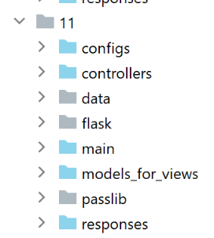
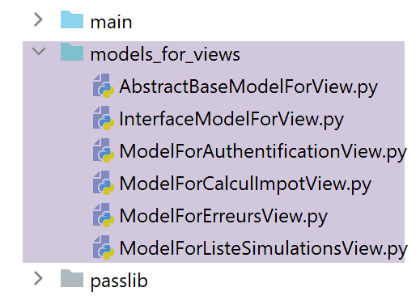
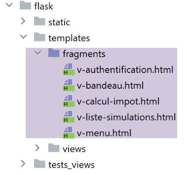
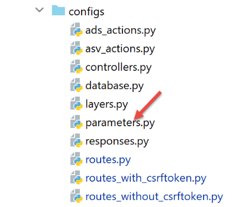

36. Exercício prático: versão 16

36.1. Introdução
Os URL da nossa aplicação têm, por enquanto, o formato [/action/param1/param2/…]. Gostaríamos de poder adicionar um prefixo a estes URL. Por exemplo, com o prefixo [/do], teríamos URL com o formato [/do/action/param1/param2/…].
36.2. A nova configuração das rotas

- para [2], o cálculo das rotas será alterado;
- em [1], o ficheiro [config] é alterado para refletir esta alteração;
A configuração [config] passa a ser a seguinte:
def configure(config: dict) -> dict:
# configuração do syspath
import syspath
config['syspath'] = syspath.configure(config)
# configuração da aplicação
import parameters
config['parameters'] = parameters.configure(config)
# configuração da base de dados
import database
config["database"] = database.configure(config)
# instanciação das camadas da aplicação
import layers
config['layers'] = layers.configure(config)
# configuração da camada MVC
config['mvc'] = {}
# configuração dos controladores da camada [web]
import controllers
config['mvc'].update(controllers.configure(config))
# ações ASV (Ação Mostrar Vista)
import asv_actions
config['mvc'].update(asv_actions.configure(config))
# ações ADS (Ação «Do Something»)
import ads_actions
config['mvc'].update(ads_actions.configure(config))
# configuração das respostas HTTP
import responses
config['mvc'].update(responses.configure(config))
# configuração das rotas
import routes
routes.configure(config)
# aplicar a configuração
return config
- linhas 37-39: o módulo [routes] (linha 38) encarrega-se de configurar as rotas (linha 39);
O ficheiro das rotas sem token CSRF [configs/routes_without_csrftoken] sofre as seguintes alterações:
# dependências
from flask import redirect, request, session, url_for
from flask_api import status
# configuração da aplicação
config = {}
# o controlador frontal
def front_controller() -> tuple:
# encaminhamos o pedido para o controlador principal
main_controller = config['mvc']['controllers']['main-controller']
return main_controller.execute(request, session, config)
# raiz da aplicação
def index() -> tuple:
# redirecionamento para /init-session/html
return redirect(url_for("init_session", type_response="html"), status.HTTP_302_FOUND)
# inicialização da sessão
def init_session(type_response: str) -> tuple:
# executa-se o controlador associado à ação
return front_controller()
# autenticar-utilizador
def authentifier_utilisateur() -> tuple:
# executa-se o controlador associado à ação
return front_controller()
# calcular-imposto
def calculer_impot() -> tuple:
# executa-se o controlador associado à ação
return front_controller()
…
O ficheiro foi despojado das suas rotas. Restam apenas as funções associadas às mesmas.
Os ficheiros de rotas com token CSRF e [configs/routes_with_csrftoken] sofrem o mesmo destino:
# dependências
from flask import redirect, request, session, url_for
from flask_api import status
from flask_wtf.csrf import generate_csrf
# configuração
config = {}
# o controlador frontal
def front_controller() -> tuple:
# a solicitação é encaminhada para o controlador principal
main_controller = config['mvc']['controllers']['main-controller']
return main_controller.execute(request, session, config)
# raiz da aplicação
def index() -> tuple:
# redirecionamento para /init-session/html
return redirect(url_for("init_session", type_response="html", csrf_token=generate_csrf()), status.HTTP_302_FOUND)
# init-session
def init_session(type_response: str, csrf_token: str) -> tuple:
# é executado o controlador associado à ação
return front_controller()
# autenticar-utilizador
def authentifier_utilisateur(csrf_token: str) -> tuple:
# executa-se o controlador associado à ação
return front_controller()
…
# inicializar sessão sem token CSRF para clientes JSON e XML
def init_session_without_csrftoken(type_response: str) -> tuple:
# redirecionamento para /init-session/type_response
return redirect(url_for("init_session", type_response=type_response, csrf_token=generate_csrf()),
status.HTTP_302_FOUND)
As rotas são calculadas pelo seguinte módulo [configs/routes]:
from flask import Flask
def configure(config: dict):
# configuração das rotas
# aplicação Flask
app = Flask(__name__, template_folder="../flask/templates", static_folder="../flask/static")
config['app'] = app
# importação das rotas da aplicação web
if config['parameters']['with_csrftoken']:
import routes_with_csrftoken as routes
else:
import routes_without_csrftoken as routes
# injetamos a configuração nas rotas
routes.config = config
# o prefixo das URL da aplicação
prefix_url = config["parameters"]["prefix_url"]
# token CSRF
with_csrftoken = config["parameters"]['with_csrftoken']
if with_csrftoken:
csrftoken_param = f"/<string:csrf_token>"
else:
csrftoken_param = ""
# as rotas da aplicação Flask
# raiz da aplicação
app.add_url_rule(f'{prefix_url}/', methods=['GET'],
view_func=routes.index)
# inicialização da sessão
app.add_url_rule(f'{prefix_url}/init-session/<string:type_response>{csrftoken_param}', methods=['GET'],
view_func=routes.init_session)
# inicialização da sessão sem token CSRF
if with_csrftoken:
app.add_url_rule(f'{prefix_url}/init-session-without-csrftoken/<string:type_response>',
methods=['GET'],
view_func=routes.init_session_without_csrftoken)
# autenticar-utilizador
app.add_url_rule(f'{prefix_url}/authentifier-utilisateur{csrftoken_param}', methods=['POST'],
view_func=routes.authentifier_utilisateur)
# cálculo-do-imposto
app.add_url_rule(f'{prefix_url}/calculer-impot{csrftoken_param}', methods=['POST'],
view_func=routes.calculer_impot)
# cálculo do imposto em lotes
app.add_url_rule(f'{prefix_url}/calculer-impots{csrftoken_param}', methods=['POST'],
view_func=routes.calculer_impots)
# listar-simulações
app.add_url_rule(f'{prefix_url}/lister-simulations{csrftoken_param}', methods=['GET'],
view_func=routes.lister_simulations)
# eliminar-simulação
app.add_url_rule(f'{prefix_url}/supprimer-simulation/<int:numero>{csrftoken_param}', methods=['GET'],
view_func=routes.supprimer_simulation)
# fim-sessão
app.add_url_rule(f'{prefix_url}/fin-session{csrftoken_param}', methods=['GET'],
view_func=routes.fin_session)
# exibir-cálculo-imposto
app.add_url_rule(f'{prefix_url}/afficher-calcul-impot{csrftoken_param}', methods=['GET'],
view_func=routes.afficher_calcul_impot)
# obter-dados-de-administrador
app.add_url_rule(f'{prefix_url}/get-admindata{csrftoken_param}', methods=['GET'],
view_func=routes.get_admindata)
# exibir-visão-cálculo-impostos
app.add_url_rule(f'{prefix_url}/afficher-vue-calcul-impot{csrftoken_param}', methods=['GET'],
view_func=routes.afficher_vue_calcul_impot)
# exibir-vista-autenticação
app.add_url_rule(f'{prefix_url}/afficher-vue-authentification{csrftoken_param}', methods=['GET'],
view_func=routes.afficher_vue_authentification)
# exibir-vista-lista-simulações
app.add_url_rule(f'{prefix_url}/afficher-vue-liste-simulations{csrftoken_param}', methods=['GET'],
view_func=routes.afficher_vue_liste_simulations)
# exibir-vista-lista_erros
app.add_url_rule(f'{prefix_url}/afficher-vue-liste-erreurs{csrftoken_param}', methods=['GET'],
view_func=routes.afficher_vue_liste_erreurs)
# caso específico
if with_csrftoken:
# iniciar-sessão-sem-token-csrf para clientes json e xml
app.add_url_rule(f'{prefix_url}/init-session-without-csrftoken', methods=['GET'],
view_func=routes.init_session_without_csrftoken)
- linhas 6-8: a aplicação Flask é criada e incluída na configuração;
- linhas 10-14: importa-se o ficheiro de rotas adequado à situação. Recorde-se que o ficheiro importado, na verdade, não contém rotas. Contém apenas as funções associadas às mesmas;
- linha 17: as funções associadas às rotas precisam de conhecer a configuração da aplicação;
- linha 20: observa-se o prefixo URL. Este pode estar vazio;
- linhas 22-27: as rotas com o token CSRF têm um parâmetro adicional em relação às que não o possuem. Para gerir esta diferença, utiliza-se a variável [csrftoken_param]:
- contém a cadeia vazia se não houver nenhum token CSRF nas rotas;
- contém a cadeia [/<string:csrf_token>] se houver um token CSRF;
- linhas 29-96: cada rota da aplicação está associada a uma função do ficheiro de rotas importado nas linhas 10-14;
36.3. Os novos controladores

Na versão anterior, todos os controladores obtinham a ação em processamento da seguinte forma:
def execute(self, request: LocalProxy, session: LocalProxy, config: dict) -> (dict, int):
# recuperar os elementos do caminho
params = request.path.split('/')
action = params[1]
Este código deixa de funcionar se houver um prefixo, por exemplo, [/do/lister-simulations]. Neste caso, a ação, na linha 3, seria [do] e, portanto, estaria incorreta.
Transformamos este código da seguinte forma:
def execute(self, request: LocalProxy, session: LocalProxy, config: dict) -> (dict, int):
# recuperam-se os elementos do caminho
prefix_url = config["parameters"]["prefix_url"]
params = request.path[len(prefix_url):].split('/')
action = params[1]
Faz-se isto em todos os controladores.
36.4. Os novos modelos

Na versão anterior, cada classe de modelo gerava um modelo da seguinte forma:
def get_model_for_view(self, request: Request, session: LocalProxy, config: dict, résultat: dict) -> dict:
# encapsulamos os dados da página num modelo
modèle = {}
# estado da aplicação
état = résultat["état"]
# o modelo depende do estado
…
# token CSRF
modèle['csrf_token'] = super().get_csrftoken(config)
# ações possíveis a partir da vista
modèle['actions_possibles'] = […]
# renderiza-se o modelo
return modèle
A partir de agora, o modelo terá uma chave adicional, o prefixo URL:
def get_model_for_view(self, request: Request, session: LocalProxy, config: dict, résultat: dict) -> dict:
# encapsulamos os dados da página no modelo
modèle = {}
# estado da aplicação
état = résultat["état"]
# o modelo depende do estado
…
# token CSRF
modèle['csrf_token'] = super().get_csrftoken(config)
# ações possíveis a partir da vista
modèle['actions_possibles'] = […]
# prefixo dos URL
modèle["prefix_url"] = config["parameters"]["prefix_url"]
# envia-se o modelo
return modèle
36.5. Os novos fragmentos

Todos os fragmentos que contenham URL devem ser alterados.
O fragmento [v-authentification]
<!-- formulário HTML - enviamos os seus valores com a ação [authentifier-utilisateur] -->
<form method="post" action="{{modèle.prefix_url}}/authentifier-utilisateur{{modèle.csrf_token}}">
<!-- título -->
<div class="alert alert-primary" role="alert">
<h4>Veuillez vous authentifier</h4>
</div>
…
</form>
O fragmento [v-calcul-impot]
<!-- formulário HTML enviado -->
<form method="post" action="{{modèle.prefix_url}}/calculer-impot{{modèle.csrf_token}}">
<!-- mensagem em 12 colunas sobre fundo azul -->
…
</form>
O fragmento [v-liste-simulations]
…
{% if modèle.simulations is defined and modèle.simulations|length!=0 %}
…
<!-- tabela de simulações -->
<table class="table table-sm table-hover table-striped">
…
<tr>
<th scope="row">{{simulation.id}}</th>
<td>{{simulation.marié}}</td>
<td>{{simulation.enfants}}</td>
<td>{{simulation.salaire}}</td>
<td>{{simulation.impôt}}</td>
<td>{{simulation.surcôte}}</td>
<td>{{simulation.décôte}}</td>
<td>{{simulation.réduction}}</td>
<td>{{simulation.taux}}</td>
<td><a href="{{modèle.prefix_url}}/supprimer-simulation/{{simulation.id}}{{modèle.csrf_token}}">Supprimer</a></td>
</tr>
{% endfor %}
</tr>
</tbody>
</table>
{% endif %}
O fragmento [v-menu]
<!-- menu Bootstrap -->
<nav class="nav flex-column">
<!-- exibição de uma lista de links HTML -->
{% for optionMenu in modèle.optionsMenu %}
<a class="nav-link" href="{{modèle.prefix_url}}{{optionMenu.url}}{{modèle.csrf_token}}">{{optionMenu.text}}</a>
{% endfor %}
</nav>
36.6. A nova resposta HTML

Na versão anterior, o código da resposta HTML terminava com um redirecionamento:
class HtmlResponse(InterfaceResponse):
def build_http_response(self, request: LocalProxy, session: LocalProxy, config: dict, status_code: int,
résultat: dict) -> (Response, int):
# a resposta HTML depende do código de estado devolvido pelo controlador
état = résultat["état"]
…
# agora é necessário gerar o URL de redirecionamento, sem esquecer o token CSRF, caso seja solicitado
if config['parameters']['with_csrftoken']:
csrf_token = f"/{generate_csrf()}"
else:
csrf_token = ""
# resposta de redirecionamento
return redirect(f"{ads['to']}{csrf_token}"), status.HTTP_302_FOUND
Este código passa agora a ser o seguinte:
def build_http_response(self, request: LocalProxy, session: LocalProxy, config: dict, status_code: int,
résultat: dict) -> (Response, int):
…
# agora é necessário gerar o URL de redirecionamento, sem esquecer o token CSRF, caso seja solicitado
if config['parameters']['with_csrftoken']:
csrf_token = f"/{generate_csrf()}"
else:
csrf_token = ""
# resposta de redirecionamento
return redirect(f"{config['parameters']['prefix_url']}{ads['to']}{csrf_token}"), status.HTTP_302_FOUND
36.7. Testes

Vamos inserir o seguinte prefixo no ficheiro de configuração [parameters]:
…
# token CSRF
"with_csrftoken": True,
# bases de dados geridas: MySQL (MySQL), PostgreSQL (PostgreSQL)
"databases": ["mysql", "pgres"],
# prefixo dos URL da aplicação
# definir a cadeia como vazia se não se pretender um prefixo ou /prefixo caso contrário
"prefix_url": "/do",
…
Vamos iniciar a aplicação e, em seguida, solicitar o URL [http://localhost:5000/do]; a resposta é a seguinte:

- em [1], o prefixo do URL;
- em [2], o token CSRF;
A aplicação também pode ser testada com os testes de consola do [http-clients/09]:

Nos ficheiros de configuração [1] e [2], o prefixo de URL deve ser incluído no URL do servidor:
"server": {
# «urlServer»: «http://127.0.0.1:5000»,
"urlServer": "http://127.0.0.1:5000/do",
"user": {
"login": "admin",
"password": "admin"
},
"url_services": {
…
}
- linha 3: o URL do servidor inclui agora o prefixo do URL;
Após esta alteração, todos os testes da consola devem funcionar.